MacBook Pro 14" M4 SK 2024 čierny | 32GB RAM, 512GB SSD
2025-07-21 | 2 049 €
Otvoriť inzerát
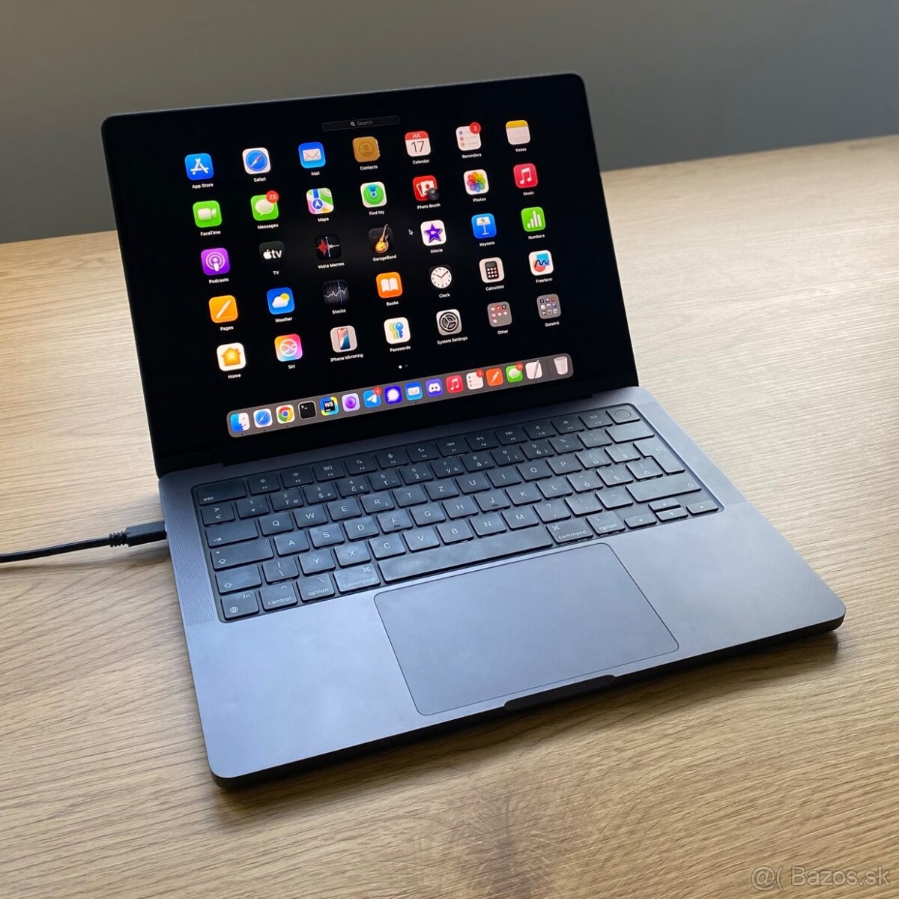
 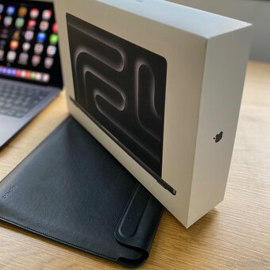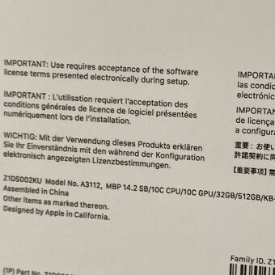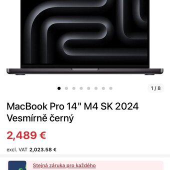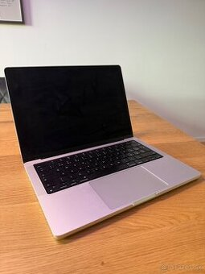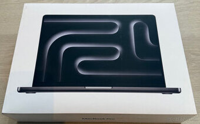
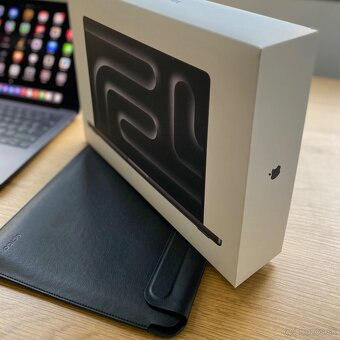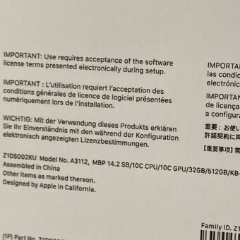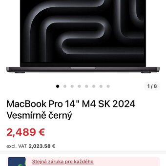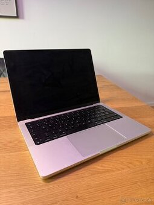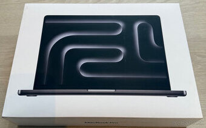 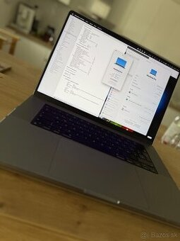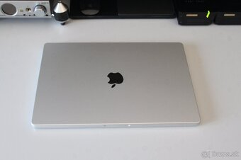
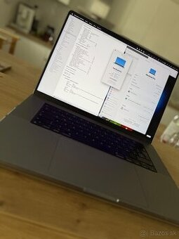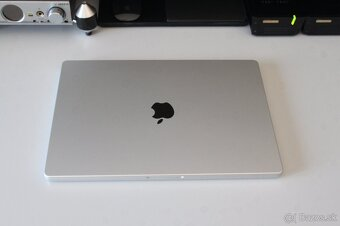
 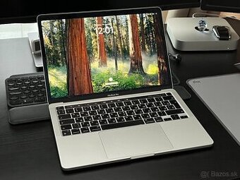
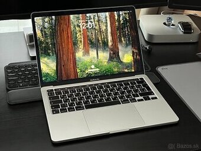 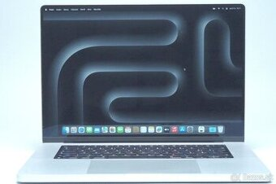
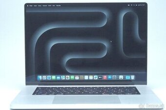
Pri rýchlom jednaní možná zľava ! ! ! Pôvodná cena 2 489 €
MacBook – Apple M4 (10-jadrový), 14,2" Liquid Retina XDR lesklý 3024 × 1964 px, 120 Hz, RAM 32 GB, Apple M4 10-jadrová GPU, SSD 512 GB, podsvietená klávesnica, webkamera, čítačka odtlačkov prstov, WiFi 6E, WiFi, Bluetooth, hmotnosť 1,55 kg, macOS
Odkaz na produkt, https://www.alza.sk/macbook-pro-14-m4-sk-2024-kozmicky-cierny-d12663314.htm